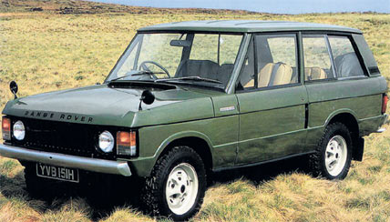
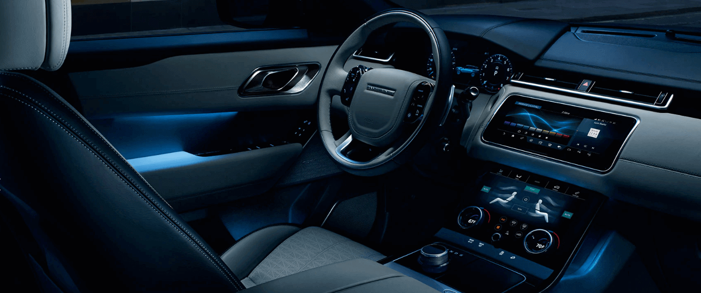
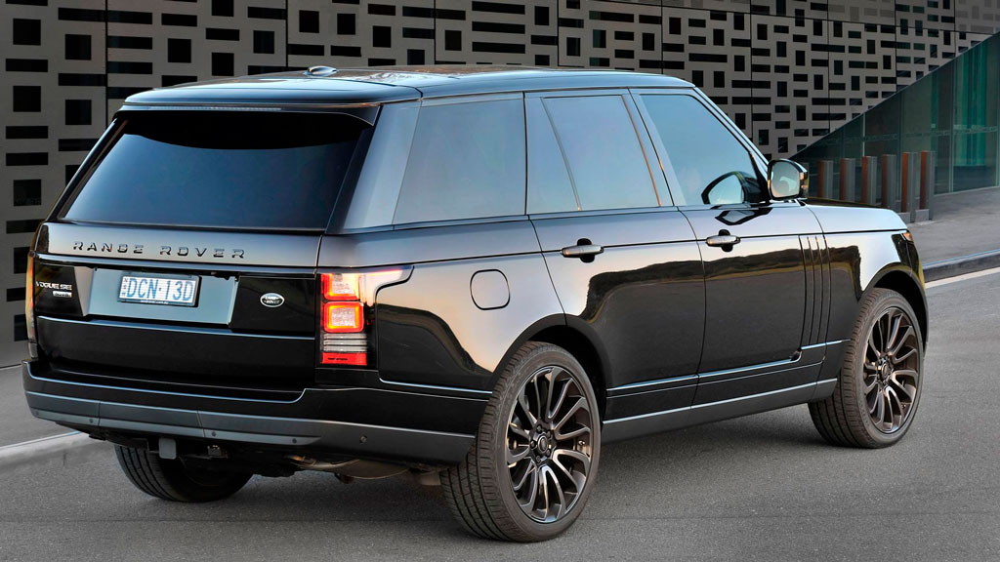
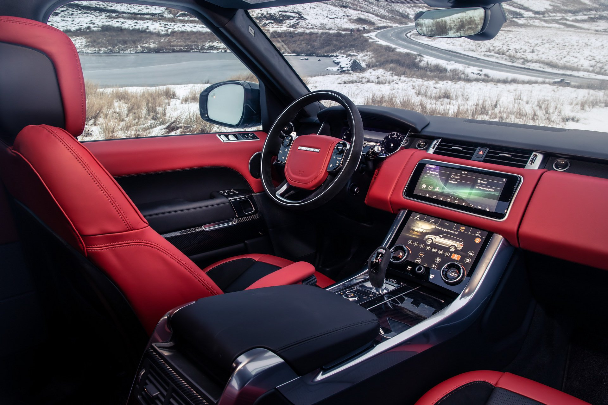
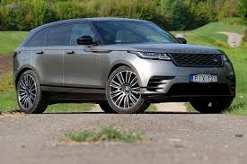
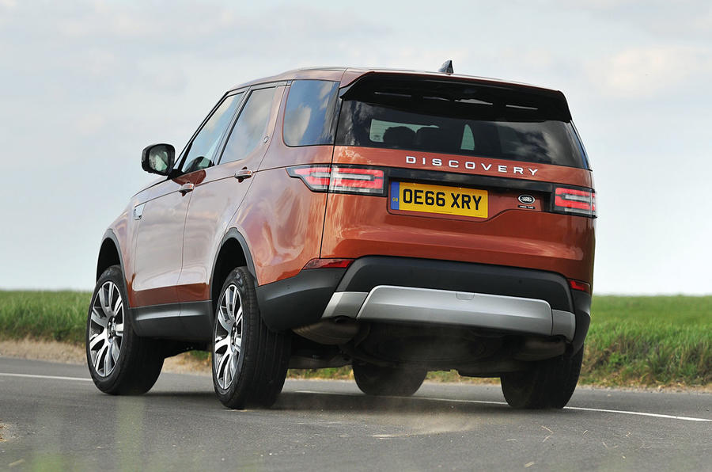
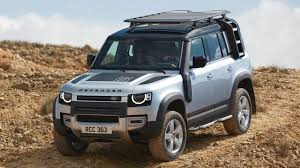

A Range Rover története
A hatvanas évek közepén megnõtt az igény a szabadidõs célokra használható terepjárók iránt. Ez fõleg az Egyesült Államokban jelentkezett, de a Rover marketingesei szerint egész Európára is jellemzõ volt. Így született meg a Rover elegáns személyautói és a kiváló terepjáró-képességű Land Rover tulajdonságainak egyesítésével a Range Rover.
A fejlesztést követõen Velar néven mutattak be egy prototípust 1968-ban, majd 1970 júniusában jelent meg az eredeti Range Rover. Sokoldalú összkerekes jármű volt: praktikus teherhordó és kényelmes túrakocsi egyszerre, otthon volt sáros, havas, vagy aszfaltos úton is. A remélt eladási adatok teljesültek és az elsõ években a használt Range Roverek magasan a listaár felett cseréltek gazdát. A felmérések azt igazolták, hogy ebben a szegmensben szélesebb kínálatra is igény lenne, így az eredeti kétajtós Range Rover mellé számos modellváltozat sorakozott fel.

Az 1980-as évek elsõ felében megjelent a hosszabb, négyajtós karosszéria, az elegánsabb utastér, az újra cserélt ötfokozatú kézi váltó mellett automata sebességváltó is, valamint továbbfejlesztett felfüggesztés. Ezentúl dízel erõforrás is elérhetõ volt. 17 évvel a bevezetés után a Range Rover megjelent az Egyesült Államokban is. Ezekkel a változtatásokkal a Range Rover egy kategóriával feljebb léphetett, és a luxusterepjárókkal vette fel a versenyt.
Az erõsebb benzines és dízelmotorok megjelenésével egyidõben az autóba ABS és számítógéppel vezérelt, magasságában állítható légrugózás került. Vogue (az USA-ban Country) néven elegáns modell jelent meg húsz centiméterrel hosszabb hátsó lábtérrel. A régi széria utolsó módosítása a dupla légzsákok autóba kerülése volt.
1994-ben jelent meg az új Range Rover, de a régi típus is gyártásban maradt Range Rover Classic néven. Ezek az autók 1996-ig készültek, így folyamatosan 26 évig gördültek le a szerelõszalagról.
1970 és 1996 között összesen 417.615 darab klasszikus Range Rover készült. A 26 éves termelés alatt átlagosan évente körülbelül 12.000 autó kelt el.

Range Rover Vogue
Fromaterv
Lebegő tetővonal, folytonos övvonal, mélyebbre húzott optikai hangsúlyok: nem alkottuk újjá a Range Rovert, csupán tökéletesebbé tettük. Egy sor olyan innovatív funkciót (pl. pixel-lézer LED fényszórók) vezettünk be, amelyek még impozánsabbá teszik megjelenését
KIFINOMULTSÁG
Hamisítatlan első osztályú utazási élmény. A Range Rover lenyűgöző, alaposan kidolhozott belső terében a négyüléses luxusautókra jellemző kényelem keveredik az ötüléses modellek sokoldalúságával. A dönthető hátsó üléseknek köszönhetően és a hosszabb ülőlappal együtt fokozott kényelmet eredményez
TECHNOLÓGIA
A Range Rover fedélzetén egy sor innovatív technológia szolgálja a kifinomult, online vezetési élményt, a kormánykeréken elhelyezett, csak megvilágítva látható, érintésérzékeny kezelőszervektől kezdve a szépségesen integrált 10 colos Touch Pro Duo érintőképernyőig

Range Rover Sport
Fromaterv
Sportos formai jegyeivel és erőteljes, izmos kiállásával a Range Rover Sport mindenkire mély benyomást tesz. Mindenütt letisztult, dinamikus, modern részletek uralkodnak, az új Range Rover Sport hűtőmaszktól kezdve a motorházfedél átdolgozott légcserélő légbeömlő nyílásain át a kifinomult, sportos könnyűfém keréktárcsák választékáig
MENETTELJESÍTMÉNY
A nagyteljesítményű motorok egytől egyig lélegzetelállító menetteljesítményt nyújtanak. Az 5,0 V8 Supercharged kompresszoros benzinmotor az eddigieknél is nagyobb, 525 lóerős teljesítményt kínál, míg a fejlett Ingenium benzinmotor és a villanymotor összjátéka említésre méltó teljesítménnyel ruházza fel a Range Rover Sport PHEV modellt.
TECHNOLÓGIA
Az elegáns Touch Pro Duo fedélzeti infotainment rendszer két 10 colos, nagyfelbontású érintőképernyőből áll. A Touch Pro Duo a színes head-up display kijelzővel, valamint a virtuális műszerfal kijelzővel együtt is használható: ilyenkor Ön párhuzamosan több funkciót tekinthet meg és kezelhet.

Range Rover Velar
Fromaterv
A Range Rover Velar dizájnfilozófiája forradalmi. Az aerodinamikát lenyűgöző arányok, az ajtó síkjába simuló kilincsek és integrált hátsó légterelő javítja. Az olyan jellemzők, mint a fólianyomott hűtőrács, erőteljes megjelenéssel ruházzák fel a modellt.
MENETTELJESÍTMÉNY
Akár az autópályán száguld, akár szűk országutakon kanyarog, a Range Rover Velar mindenhol fölényes magabiztossággal teljesít. Az intelligens hajtáslánc-dinamika (IDD) és fékvezérelt nyomatékvektor-szabályozás rendszerekkel felvértezett összkerékhajtás (AWD) magával ragadó, élvezetes vezethetőséget kínál.
TECHNOLÓGIA
A Touch Pro Duo infotainment rendszer két 10 colos, nagy felbontású érintőképernyőjét mesteri módon integrálták a műszerfalba. A Touch Pro Duo a külön megrendelhető színes head-up kijelzővel, valamint a szintén opciós interaktív vezető kijelzővel együtt is használható: ilyenkor Ön párhuzamosan több funkciót tekinthet meg és kezelhet..

Range Rover Discovery
Fromaterv
Az utastér kiemelkedően sokoldalú, amint azt a könnyen átrendezhető, opciós hét ülés, valamint a bőséges tárolási lehetőségek is mutatják; az átgondolt helykihasználáshoz kifinomult komfort társul. Az intelligens üléslehajtás rendszernek köszönhetően a második és harmadik sori ülések a raktérben elhelyezett kapcsolókról, a fő érintőképernyőről, vagy akár a távolból, okostelefonról is átkonfigurálhatók.
MENETTELJESÍTMÉNY
A Discovery otthonosan viselkedik a városban, ugyanakkor az aszfalttól távol is kifogástalanul teljesít. Új mércét állít a vontatási képességek terén: akár 3,5 tonnás1. vontatmánnyal is megbirkózik, a biztonságos, egyszerű vontatásról számtalan funkció gondoskodik. Az optimalizált geometria és a Land Rover által kifejlesztett, egyedülálló technológiák révén kategóriája legkiválóbb terepalkalmasságával rendelkezik.
TECHNOLÓGIA
A létező legmagasabb szintű csatlakoztatást, tájékoztatást és menetalkalmasságot a legmodernebb jármű- és infotainment technológiák alkalmazása szavatolja. A Meridian™ audiorendszerek választékától az olyan innovatív megoldásokon át, mint az InControl Touch Pro, egészen a vezetést, parkolást és vontatást megkönnyítő vezetőtámogató rendszerekig minden a rendelkezésére áll.

Range Rover Defender
Fromaterv
Minden eddiginél szilárdabb anyagot használtunk, a tesztek során a végsőkig elmentünk. A Defendert optimális tartósságra terveztük.Vele született terepalkalmasság. A Defender a legszélsőségesebb terepen éppúgy helyt áll, mint a nagyvárosi dzsungelben, és mindegy neki, hogy futóhomokban vagy jégmezőn vezetjük.Kialakítása hamisítatlanul hiteles. És páratlanul célszerű.
TECHNOLÓGIA
A XXI. századi kalandokra felkészített Defender a Land Rover legösztönösebben kezelhető technológiáival biztosítja utasai kényelmét, kapcsolódását és a tökéletes kilátást.

Range Rover
Land Rover egy közismert terepjáró. A Rover cég első, "klasszikus" terepjárója, világviszonylatban pedig az egyik legismertebb.